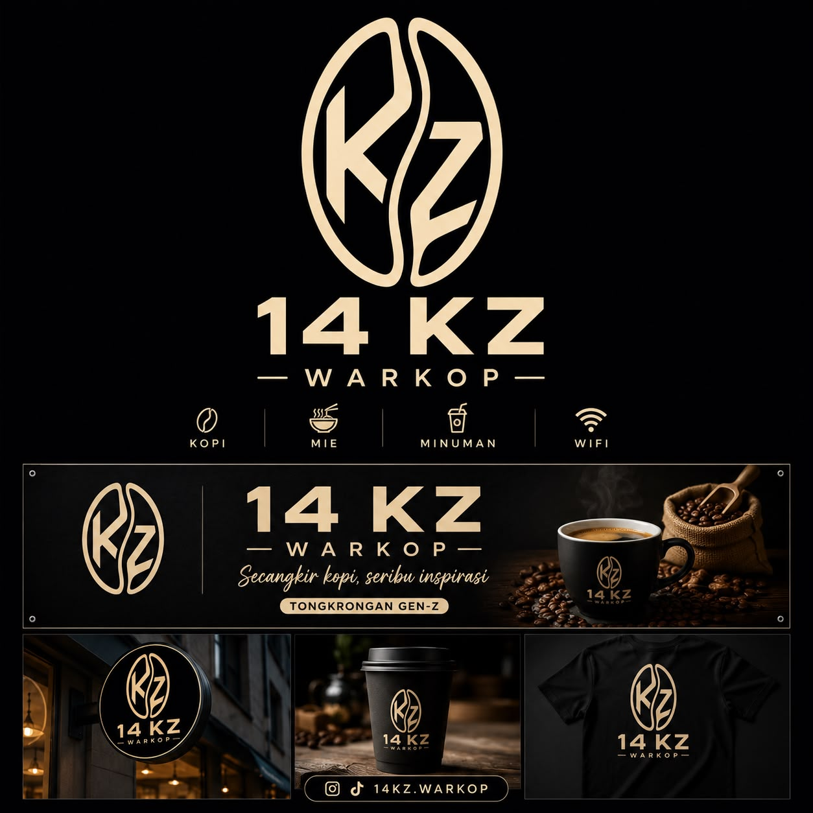

Tentang Kami
Bukan Sekadar Warkop.
Kami percaya: tempat duduk yang baik, kopi yang diseduh dengan serius, dan harga yang jujur bisa hadir dalam satu warkop.

Cerita 14KZ
Berawal dari Ngopi Sore di Tepi Jalan.
Warkop 14KZ berawal dari satu kebiasaan sore di Raya Petir, Serang: ngopi murah sambil ngobrolin apa saja tugas, mimpi, sampai rencana yang nggak jelas ke mana.
Dari situ kami bertanya: kenapa warkop harus ketinggalan rasa? Kenapa “nyaman” harus mahal? Kami rombak semuanya biji kopi pilihan, racikan signature, WiFi kencang, dan tempat yang enak ditemani sampai malam. Dengan harga yang tetap bersahabat.
Makanya kami menyebutnya Tongkrongan Gen-Z: tempat nongkrong yang serius soal kopi dan santai soal segalanya. Karena buat kami, secangkir kopi memang seribu inspirasi.
Coba Racikan Kami →Janji 14KZ
Tiga Hal yang Kami Pegang.
Rasa Konsisten
Racikan sama, takaran sama, tiap hari. Kopi enak itu bukan kebetulan itu kebiasaan.
Harga Jujur
Menu di website = menu di dinding. Tidak ada harga “online” yang naik diam-diam.
Kursi untuk Semua
Mahasiswa yang nugas, pekerja yang meeting, atau yang cuma mau diam-diam ngopi semua muat.
Identitas Kami
Hitam, Krem, dan Emas.
“Secangkir kopi, seribu inspirasi.”
TONGKRONGAN GEN-Z
Logo, kemasan, dan signage kami memakai palet yang sama dengan website ini sederhana seperti semestinya warkop, rapi seperti semestinya kafe.
